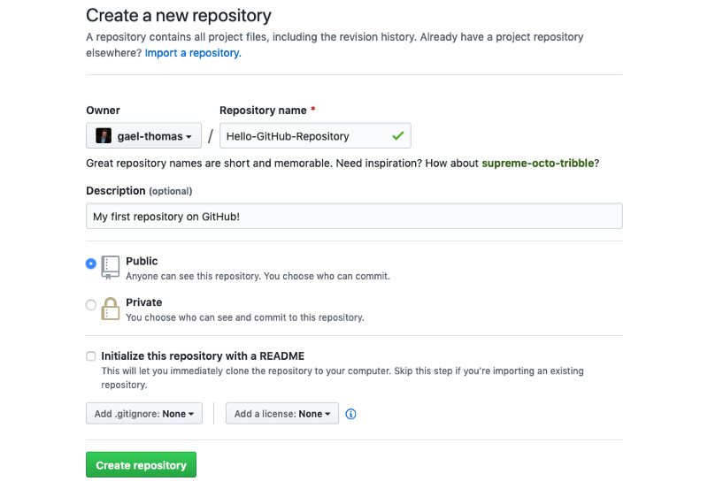

Introduction to Versioning & Git
⚡️ This lesson has been adapted from the Digital Humanities Research Institute’s Workshop on git https://github.com/DHRI-Curriculum/DHRIFT/blob/main/workshops/git.md. Many thanks to the authors for sharing their materials!
So far, we have been using the command line in the terminal, installed GitHub Co-Pilot and git, but we have yet to use either for their main purpose: version control and collaborative coding. In this lesson, we will explore what version control is and how it works, as well as how to use GitHub to collaborate with others and share our code and datasets.
What is Git?
While we already discussed what GitHub is in-depth (link here), we have yet to discuss git much.
Git is a software used for version control, that is keeping track of changes in your files and folders over time. Git requires changes to be saved (committed) before they can be combined (merged) with the main project. What that means in lay terms is that Git is the software that allows you to track changes in your project and collaborate with others. You are already familiar with this concept if you’ve ever used Google Docs or Microsoft Word’s “Track Changes” feature, but in those you get the version history automatically. With git, we have to tell it what to track and when to track it.
Created in 2005 by Linus Torvalds, the creator of Linux, the open-source operating system that powers much of the internet, Git is now the most popular version control system in the world.1 It is used by millions of developers and researchers to collaborate on projects and keep track of changes in their code and data
A very important thing to understand is that while git and GitHub sound the same, they are two separate technologies. Git is a version control system, while GitHub is a platform for hosting git repositories (in git, a folder is called a repository). We’ll be using both in this course, but it’s important to realize they are not identical.
So here’s a few bullet points to remember this distinction:
| Git | GitHub | |
|---|---|---|
| Description | is a version control system (aka a software that tracks changes in files and folders) | is a remote platform for hosting git repositories (aka folders) |
| Location | exists locally on your computer (you need to install it) | is a website (you don’t need to install it) |

Even though these two technologies are separate, they are often used together. For example, you can use git to track changes in your files and folders locally on your computer, and then push those changes to a remote repository on GitHub. This is what we will be doing in this course.
Why is Git Useful for Computing in the Humanities?
Although Git and version control systems are predominantly used in software development, they offer several advantages for scholars in Digital Humanities. Similar to how you might handle versions of a paper, essay, or data set, Git allows you to:
- Keep track of changes in plain text files
- Collaborate in real-time with other researchers
- Easily revert to earlier versions
- Create different branches to explore new ideas without disturbing the main project, and see who added what to the project
To give a sense of what this version tracking looks like, here’s an example of an error I corrected in last week’s CLI tutorial, after one of your peers pointed it out to me:

This screenshot is from GitHub but shows what git tracks (confusing to combine both, but this visual is hopefully helpful!). You can see on the left, I deleted the previous erroneous line, and on the right, is the corrected version. This is a very simple example, but it gives you a sense of how git tracks changes.
Working with Git
First things first, let’s double check we all have git installed. To do this, we can use the git --version command. This will tell us what version of git we have installed.
git --versionRemember that we run our commands in the terminal!
Hopefully that worked for everyone! If not, please let the instructors know.
Since we have already installed git, we can start using it in our projects. But first, let’s create a new folder for our project in our home directory. We can do this by using the mkdir command and then the name of the folder we want to create. Let’s call our folder is310-first-repo.
mkdir is310-first-repoNow let’s navigate into this folder using the cd command and then create a new file using the touch command (or if you’re on PowerShell New-Item -ItemType File -Path . -Name [file-name]). Let’s call this file first_file.txt.
Next, we can add some text to this file using the following commands. Let’s add the following text to the file:
Unix/Linux
echo "This is my first file" > first_file.txtPowerShell
"This is my first file" | Out-File -FilePath first_file.txtSo now we have a new folder and a new file. But what if we want to track the changes we make to this file? This is where git comes in.
Initializing a Git Repository
To start tracking changes to our file, we need to initialize a git repository. We can do this by using the git init command. This will initialize a git repository in our current folder.
git initYou should see the following output:
Initialized empty Git repository in /Users/YOU/is310-first-repo/.git/Now if we type ls -a or Get-ChildItem -Force we will see a new folder called .git. This is the folder that contains all of the information about our git repository. The .git folder is hidden by default, so we need to use the -a or -Force flag to see it. This means that if you try looking at your folder either in a file explorer or in the terminal with just ls, or even in the VS Code Explorer, you won’t see the .git folder.
With our git repository initialized, we can now start tracking changes to our file, but this is not automatic. Instead, we have to tell git which files to pay attention to and track, and also when to take a snapshot of our changes.
Adding Files to the Staging Area
To do this, we need to add our file to the staging area. We can do this by using the git add command and then the name of the file we want to add. Let’s add our first_file.txt file.
git add first_file.txtNow if we type git status we will see that our file has been added to the staging area. This means that git is now tracking changes to our file.
git statusWe should see the following output:
On branch main
No commits yet
Changes to be committed:
(use "git rm --cached <file>..." to unstage)
new file: first_file.txtThis is telling us that we are on the main branch, we have not made any commits yet, and we have one file in the staging area. You can run git status at any time to see the status of your repository.
Committing Changes
Now that we have added our file to the staging area, git knows that we want it to track this file, but we have to tell it to finalize our snapshot of the file, which we do by committing our changes. To do this, we use the git commit command and then the -m flag to add a message to our commit. This message should describe the changes we made to the file. Let’s add the following message:
git commit -m "Added first file to our repository"Commit Messages
Ideally, your commit messages should be short and descriptive. They should describe the changes you made to the file.
If you don’t add a message, git will automatically open a text editor in your terminal and ask you to add a message. You’ll likely see something that looks like the following:

This looks very intimidating, but it’s actually not that bad. This is the default text editor (think like VS Code, but much simpler) for git, which is called Vim. Vim is a very powerful text editor, but it has a steep learning curve. If you want to learn more about Vim, you can read this https://www.freecodecamp.org/news/vim-beginners-guide/.
The key thing to know is that if you get this screen you can either add a message or exit the text editor. To add a message, you need to press i on your keyboard. This will put you in insert mode, which means you can type. Then you can add your message. Once you have added your message, you need to press esc on your keyboard. This will take you out of insert mode. Then you need to type :wq and press enter. This will save your message and exit the text editor.
If you just want to exit the text editor, you can press esc on your keyboard. Then you need to type :q! and press enter. This will exit the text editor without saving your message. In which case, you’ll see the following message:
Aborting commit due to empty commit message.While doing this once or twice is fine, it can get annoying so it’s better to add a message to your commit with the -m flag. Be sure that you use quotations marks around your message, and that you use the same type of quotations marks. So if you use double quotes, use double quotes around your message. If you use single quotes, use single quotes around your message. If for some reason you end up mixing them, you’ll get a quote prompt in your terminal.
quote>This is just git telling you that you didn’t close your quotation marks, so if you add the correct quotation marks and press enter, it will add your message.
Now if we type git status again we will see that our file is no longer in the staging area. This means that our changes have been committed to our repository.
git statusWe should see the following output:
On branch main
nothing to commit, working tree cleanThis is telling us that we are on the main branch, we have no changes to commit, and our working tree is clean. You can run git status at any time to see the status of your repository.
The DHRI lesson has the following metaphor/explanation for how we can conceptualize this process that I find very helpful:

Thinking of git as a camera taking a photo of your project at a particular point in time is a helpful way to understand how git works (also like thinking of it as a save point in a video game). Every time you commit your changes, you are taking a snapshot of your project. You can then go back to that snapshot at any time. But also sometimes you don’t want to save a snapshot or you want to redo it, git let’s you do that too.
Viewing the Version History
Now that we have committed our changes, we can view the version history of our file. To do this, we use the git log command. This will show us the commit history of our file. We can see the commit message, the author, the date, and the commit hash. The commit hash is a unique identifier for each commit. It is a long string of letters and numbers that is used to identify each commit. We can use this commit hash to revert to a previous version of our file.
git logWhich should output something that looks like the following:
commit 8bb8306c1392eed52d4407eb16867a49b49a46ac (HEAD -> main)
Author: Your Name <your-email-here@gmail.com>
Date: Tue Jan 22 16:03:39 2024 -0400
Added first file to our repositoryThis is telling us that we have one commit, the commit is identified with that long string of letters and numbers (this is the commit hash), the commit is on the main branch. The Author and Date should correspond to your information and when you made the commit. Finally, we see our commit message.
We could now update the file and commit our changes again. If we did that, then our version history via git log would show the two commits.
These activities are the core features of git. The next step is to connect our local repository to a remote repository on GitHub.
Working with GitHub
By now you should have your git configuration setup and have a GitHub account, but feel free to look back at our course tools lesson if you’re having any issues.
Creating a New Repository
To get our local git repository into GitHub, the first thing we need is open a web browser and navigate to GitHub. The homepage is very full featured, and we’ll be discussing some of those later. First, we need to create a new repository. To do this, we need to click on the New button in the top right-hand corner of the screen. This will take us to a page where we can create a new repository.

Now you’ll be asked to give your repository a name. Let’s create a repository called is310-first-repo. You can also add a description, choose whether it’s public or private, and add a license (this essentially tells others if they can reuse your materials or not). For us to see each other’s repositories, we need to select public.

You also have the option to initialize the repository with a README, which is a file that provides information about the project. We will be discussing this more later so for now leave this option unchecked. You can also add a .gitignore file, which is a file that tells Git to ignore certain files in the repository. Again, something we’ll discuss more in-depth in the coming weeks.

Once you create your repository it should like the photo above. If you selected the Initialize this repository with a README option, you will see a blank repository that looks like the photo below.

To understand what each button does feel free to browse through our advanced git and GitHub resource, but first let’s try to get our local repository onto GitHub.
Pushing to GitHub
Now that we have created a new repository on GitHub, we need to connect it to our local repository. To do this, we need to add a remote repository. We can do this by using the git remote add command and then the name of the remote repository and the URL of the remote repository. Let’s call our remote repository origin and use the URL of our GitHub repository.
git remote add origin https://github.com/OWNER/REPOSITORY.gitIn this case, we would replace OWNER with our GitHub username and REPOSITORY with the name of our repository. So for me, it would be ZoeLeBlanc/is310-first-repo.
We can check this by using the git remote -v command. This will show us the remote repositories we have added to our local repository.
git remote -vWhich should output something that looks like the following:
origin https://github.com/username/repository.git (fetch)
origin https://github.com/username/repository.git (push)Now that we can see that we have added our remote repository, we can push our local repository to our remote repository. We can do this by using the git push command.
This command has the following structure:
git push [remote repository] [flags] [local repository]So all we need to do is specify the name of our remote repository and the name of our local repository. What’s a bit confusing is that we don’t need to write our GitHub URL here but instead can just write origin. If you look at the output from git remote -v again, you’ll notice it says origin next to our GitHub URL. This is because origin is the default name for our remote repository. We can change this, but for now we’ll just use origin.
Then for our local repository, we don’t need to say our directory name but instead need to specify the name of the branch we want to push. We’ll discuss branches more later, but for now we can just use main. So our command will look like this:
git push origin mainWhich should output something that looks like the following (though the exact details will be different depending on your repository, files, etc.):
Enumerating objects: 3, done.
Counting objects: 100% (3/3), done.
Writing objects: 100% (3/3), 226 bytes | 226.00 KiB/s, done.
Total 3 (delta 0), reused 0 (delta 0), pack-reused 0
To github.com:ZoeLeBlanc/is310-first-repo.git
* [new branch] main -> mainIf you see a fatal error that looks like this:
fatal: 'origin' does not appear to be a git repository
fatal: Could not read from remote repository.
Please make sure you have the correct access rights
and the repository exists.That just means you forgot to add your remote repository. If you fix that and try again, it should work.
Now if we go to our GitHub repository, we will see that our local repository has been pushed to our remote repository.
Configuring SSH Keys (Optional But Recommended)

Now when you pushed to GitHub, you likely saw something similar to this image, where it was asking you to enter your username and password for your GitHub account. This is fine, but it can be annoying to have to do this every time you want to push changes from your local computer to your remote GitHub Repository.
So, instead we can configure SSH keys. SSH keys are a way to securely connect to a remote server without having to enter your username and password every time. To do this, we need to generate a new SSH key and then add it to our GitHub account.
First, we should check for existing SSH keys. We can do this by using the ls command and then the name of the file we want to check.
ls ~/.ssh/id_*.pubNotice that we are using the ~ symbol. Remember, this is a shortcut for our home directory. So if we are using a Mac, this would be /Users/[USER NAME]/.ssh/id_*.pub. If we are using a Windows machine, this would be C:\Users\[USER NAME]\.ssh\id_*.pub. We can run this command from any directory and it will search our home directory for the file (which is why it’s important to know about relative and absolute file paths!).
If you see a file called id_rsa.pub or id_ed25519.pub then you already have an SSH key. If you don’t see this file, then you need to generate a new SSH key.
To generate a new SSH key, we need to use the ssh-keygen command and then the -t flag to specify the type of key we want to generate. Let’s generate a new RSA key.
ssh-keygen -t ed25519 -C "your_email@example.com"You should replace your_email@example.com with the email you use for your GitHub account. Be sure to wrap your email in quotations, like in the example. If you get an error, you might be working with an older version of SSH. In that case, you can use the following command.
ssh-keygen -t rsa -b 4096 -C "your_email@example.com"Both rsa and ed25519 are types of encryption, which is a way to secure your data. You can read more about encryption https://www.cloudflare.com/learning/ssl/what-is-encryption/.
You’ll be prompted to save your SSH key into a file. You can just press enter to save it in the default location, which is your home directory.
> Enter a file in which to save the key (/Users/YOU/.ssh/id_ALGORITHM): [Press enter]You’ll then be prompted to enter a passphrase. You can enter a passphrase or leave it blank. If you enter a passphrase, you’ll have to enter it every time you use your SSH key. If you leave it blank, you won’t have to enter it every time you use your SSH key (I would recommend leaving it blank unless you’re very good at remembering/storing pass phrases, but it’s up to you!).
Next we need to start the ssh-agent in the background. We can do this by using the eval command and then the ssh-agent command.
For Unix/Linux/WSL:
eval "$(ssh-agent -s)"For PowerShell, make sure you are running PowerShell as an administrator and then run the following command:
Start-Service ssh-agentWhich should output something that looks like the following:
> Agent pid 59566If you are getting errors, you might need to use a slightly different command depending on your operating system. You can read more about this https://docs.github.com/en/authentication/connecting-to-github-with-ssh/generating-a-new-ssh-key-and-adding-it-to-the-ssh-agent#adding-your-ssh-key-to-the-ssh-agent.
Mac Users Configuration (Also for those running WSL on Windows)
If you are on a MacBook running Sierra 10.12.2 or later, you will need to do some manual configuration (you can check operating system version by clicking on the Apple icon in the top left-hand corner of your screen and then clicking on About This Mac).
First, you’ll need to check if this file exists with this command:
ls -al ~/.ssh/configIf you don’t see a file called config, then you need to create one. You can do this by using the touch command and then the name of the file you want to create.
touch ~/.ssh/configThen you need to open it with a text editor. You can do this by using the open command and then the name of the file you want to open.
open ~/.ssh/configThis will open the file in your default text editor. Then you need to add the following lines to the file.
Host *
AddKeysToAgent yes
IdentityFile ~/.ssh/id_ed25519If you added a passcode, you’ll need to add UseKeychain yes underneath the AddKeysToAgent yes.
Then you need to save the file and exit the text editor. You can do this by pressing Command + S and then Command + Q.
Adding SSH Key to SSH Agent
Now we need to add our SSH key to the ssh-agent. We can do this by using the ssh-add command and then the name of the file we want to add.
ssh-add ~/.ssh/id_ed25519If you added a passcode and are on a Macbook, you will need to alter the command slightly.
ssh-add --apple-use-keychain ~/.ssh/id_ed25519Finally, we need to add our SSH key to our GitHub account. To do this, we need to copy our SSH key to our clipboard.
If you are running either Unix/Linux, we can use the pbcopy command and then the name of the file we want to copy.
pbcopy < ~/.ssh/id_ed25519.pubIf you are running WSL/PowerShell, we can use the clip command and then the name of the file we want to copy.
cat ~/.ssh/id_ed25519.pub | clip.exeAnd now we can add our SSH key to our GitHub account. To do this, we need to go to our GitHub account and click on the Settings tab. Then we need to click on the SSH and GPG keys tab. Finally, we need to click on the New SSH key button and then paste our SSH key into the Key box. We can also add a title for our SSH key. Let’s call it My SSH Key.
Once we have add the SSH key, we can click on the Add SSH key button. Now we have added our SSH key to our GitHub account. Then we can just update our remote repository URL to use SSH instead of HTTPS. We can do this by using the git remote set-url command and then the name of the remote repository and the URL of the remote repository. Let’s call our remote repository origin and use the URL of our GitHub repository.
git remote set-url origin git@github.com:OWNER/REPOSITORY.gitNow you should try pushing to GitHub again. The first time you do this, you might see something like the following:
The authenticity of host 'github.com (IP ADDRESS)' can't be established.
RSA key fingerprint is SHA256:xxxxxxxxxxxxxxxxxxxxxxxxxxxxxxxxxxxxxxxxxxx.
Are you sure you want to continue connecting (yes/no/[fingerprint])?This is just git asking you if you want to connect to GitHub. You can type yes and press enter. Then you should see something like the following:
Warning: Permanently added 'github.com,IP ADDRESS' (RSA) to the list of known hosts.This is just git telling you that it has added GitHub and we can now push to our GitHub repository without having to enter our username and password every time 🥳.
You can read more about managing remote repositories here and managing SSH keys here.
Editing Files in GitHub
So far, we have been editing our files locally and pushing them up to GitHub. However, we can also edit files in GitHub. This is a great way to make quick changes to a file or add a new file to a repository. Let’s try adding using the GitHub interface in the browser and add a special type of file called a README.md file.
We can do this through the web browser interface, by clicking the add file button and then selecting create new file.

Then we need to give our file a name. Let’s call it README.md. The .md extension stands for markdown, which is a way to format text. We’ll be discussing this more later, but for now just know that .md files are used to format text. For now, let’s just add some text to our file. We can do this by typing in the text box. Let’s add the following text:
# IS 310 Test Repository
This is my first repository.We can see what this looks like by clicking on the Preview tab. This will show us a preview of our file.

Now we need to commit our changes and file by clicking the green Commit changes box. This will prompt us for a commit message. Let’s add the following message:
Added README.md fileFinally, we need to tell GitHub whether to create a new branch or commit to the main branch. Click main for now and then click Commit changes. Now we have added a new file to our repository and you should see it when you navigate to your repository.
GitHub Dev (Optional, Additional Feature)
Besides using the normal web interface, there’s also a new way to edit files in the GitHub browser interface, called GitHub Dev. This is a new feature that similar to what we just did, allows you to edit files in the browser and commit them to your repository. To access it, all you have to do is change github.com in your URL to github.dev.
So for us, we would change https://github.com/[USER NAME]/is310-first-repo to https://github.dev/[USER NAME]/is310-first-repo.

You can also just hit the . key on your keyboard when you’re in a repository to open GitHub Dev.
Now you should see a new interface that looks like this:

You’ll likely recognize this interface, since it’s an instance of Visual Studio Code (VS Code). This feature is completely optional, but can be helpful to know it exists, since you can also commit changes through this interface. You can read more about it https://docs.github.com/en/codespaces/the-githubdev-web-based-editor.
Pulling from GitHub
Now we have two versions of our repository. One on our local computer and one on GitHub, and these two have separate files. How can we get this remote version into our local one? This is where pulling becomes useful.
To pull from GitHub, we need to use the git pull command and then the name of the remote repository and the name of the branch we want to pull. Let’s pull from our origin remote repository and the main branch.
git pull origin mainWhich should output something that looks like the following:
remote: Enumerating objects: 4, done.
remote: Counting objects: 100% (4/4), done.
remote: Compressing objects: 100% (2/2), done.
remote: Total 3 (delta 0), reused 0 (delta 0), pack-reused 0
Unpacking objects: 100% (3/3), 935 bytes | 233.00 KiB/s, done.
From github.com:ZoeLeBlanc/is310-first-repo
* branch main -> FETCH_HEAD
d8dad7b..832b673 main -> origin/main
Updating d8dad7b..832b673
Fast-forward
README.md | 1 +
1 file changed, 1 insertion(+)
create mode 100644 README.mdNow if we type ls we will see that we have a new file called README.md. This is the file we created in GitHub. We can also see the file in VS Code and edit it there.
We’ve officially closed the loop between our local and remote repositories. We can now edit our files locally and push them to GitHub, or edit our files in GitHub and pull them to our local repository.

This is the core workflow for using git and GitHub.
Homework: Init IS310
Now it’s your turn to try this out! Trying following the steps above to create a new GitHub repository called is310-coding-assignments in your GitHub account. For this assignment, I would highly recommend you use this git cheatsheet and also take a look at this overview of best practices, though we will be discussing this in-class as well.
For this assignment, you need to do the following:
- Create a new GitHub repository called
is310-coding-assignments. - Create a new directory in your local computer called
is310-coding-assignmentsand enable it as a git repository. - Create a Markdown file called
README.mdwithinis310-coding-assignments. - Create a folder called
imageswithinis310-coding-assignments.
The final piece is updating your README.md file with evidence that you have completed all Required tool installations for the course, listed here (though you are welcome to post also proof of Optional tools). If you are using your own setup, please also post proof of your equivalent. You can do this by adding a list of the tools you have installed and adding screenshots of the tools running on your computer. You can use the images folder to store these screenshots.
We have yet to learn much about Markdown but you can use the following template to structure your README.md file:
# Init IS310 Homework
## Proof of Installation
1. Python

2. Git

3. VS Code
This should also include your Hypothesis username.
Once you have created everything locally, you will need to add, commit, and push your changes to your GitHub repository. You can use the following commands to do this:
git add .
git commit -m "Init IS310 Homework"
git push origin mainHowever, remember to connect your local repository with your GitHub repository (hint: git remote add origin if your GitHub repository is empty OR git remote set-url origin if you have files in your GitHub). If you get any errors, you can always ask for help in the Slack channel or reach out to the Instructors directly.
You are also encouraged to try out using GitHub Co-Pilot or any other AI chatbot to help you complete this assignment, and we also have a mored detailed lesson on git & GitHub that should cover most issues you might face.
Once you have completed this assignment, post the link to your GitHub repository in our first discussion forum https://github.com/cultureasdata-uiuc/is310-spring-2026/discussions/1.
Resources
- Once you’ve worked through this lesson, feel free to read through our Advanced git and GitHub resource. In particular, it has a helpful section on git cheatsheet that you’re welcome to refer to as you work through the assignments/throughout the semester.
Footnotes
Before Git, there were several generations of version control systems that evolved to meet the changing demands of software development. The first generation, represented by tools like Source Code Control System (SCCS) developed in 1972 by Marc Rochkind at Bell Labs, was centralized and relied on simple single-file locking-based concurrency. The Revision Control System (RCS), developed a decade later in 1982, followed the same lines but became widely popular due to its open-source nature. The second generation included the Concurrent Versions System (CVS), which allowed for more networked, collaborative work by introducing a merging-based approach instead of a file-locking approach. However, CVS had limitations that were addressed by its successor, Subversion, released in 2000, which allowed for more robust file set operations with atomic commits. Git represents the third generation of version control, combining lessons from these previous systems with new features suited for modern, large-scale software development. For more information, see Shane Lin’s Git for Humanists.↩︎